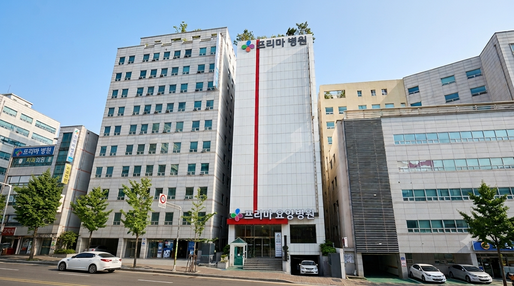

외과
상처·욕창 관리와 수술 후 회복 과정을 살핍니다.
외과 · 재활의학과 · 한방진료 · 간병서비스
상처·욕창 관리부터 기능 회복, 양·한방 협진, 생활 간병까지 환자 상태에 맞춰 연결합니다.

프리마요양병원 전경Medical & Care
환자의 현재 상태와 생활 여건을 확인해 필요한 진료, 재활, 간병을 연결합니다.
상처·욕창 관리와 수술 후 회복 과정을 살핍니다.
운동·작업치료와 일상생활 복귀를 지원합니다.
환자 상태를 고려해 침·뜸·부항과 협진을 안내합니다.
식사, 위생, 체위 변경, 이동과 정서적 지원을 제공합니다.
Facilities
실제 등록된 시설 사진을 우선 표시하며, 상담을 통해 병실과 이용 공간을 자세히 안내합니다.
Why Prima
환자 상태 변화를 의료진과 간호 인력이 함께 확인합니다.
환자의 기능 수준을 고려해 운동·작업치료와 일상 복귀를 지원합니다.
식사, 위생, 체위 변경, 이동과 정서적 안정을 가까이에서 돕습니다.
입원 전 필요한 자료와 절차를 전화 또는 온라인으로 안내합니다.
Trust & Quality
인증·평가 자료는 실제 증빙이 확인된 내용만 게시하고, 시설과 운영 정보는 상담을 통해 투명하게 안내합니다.
인증·평가 확인Admission
환자 상태와 희망 일정을 알려주세요.
진료소견서, 처방전, 검사자료를 검토합니다.
입원 가능 여부와 준비사항을 안내합니다.
About Prima
환자 한 분 한 분을 존중하고 진료, 간호, 재활과 생활 전반을 세심하게 살피겠습니다.
보호자와 투명하게 소통하며 믿을 수 있는 요양병원이 되겠습니다.
의료법인 건강한사람들 의료재단
프리마요양병원 이사장 일동
Medical Care
과도한 치료 효과를 약속하지 않고, 환자 상태에 따라 필요한 진료와 생활 지원을 연결합니다.
Hospital Facilities
병실, 재활치료실, 프로그램실, 휴게공간 등 환자와 보호자가 이용하는 공간을 안내합니다.
1층 원무·접수 · 상담실
2층 재활치료센터
3~4층 입원 병동
5층 인공신장(투석)실
옥상 정원·산책로
Our People
게시 동의를 받은 의료진과 직원 정보만 표시합니다.
Trust & Quality
실제 보유한 인증과 평가 자료를 증빙 이미지와 함께 안내합니다.
인증·평가 명칭과 결과는 실제 증빙자료가 확인된 내용만 게시합니다.
Hospital Life
환자 상태를 고려한 인지·정서·신체 활동과 계절 프로그램을 운영합니다.
기억력과 집중력 유지에 도움이 되는 활동을 진행합니다.
음악과 미술 활동으로 정서적 안정을 지원합니다.
식물을 가꾸며 감각 자극과 성취 경험을 돕습니다.
환자의 상태에 맞춘 가벼운 체조와 움직임을 제공합니다.
생신과 명절, 계절에 맞춘 프로그램을 운영합니다.
Weekly Menu
등록된 식단표와 음식 사진을 최신순으로 확인할 수 있습니다.
Family Gallery
환자 개인정보와 초상권을 확인한 사진만 게시합니다.
Admission & Discharge
입원상담부터 병실 안내까지 필요한 절차를 순서대로 확인하세요.
방문·전화·온라인상담
소견서·처방전·검사자료
입원 가능 여부·병실 배정
원무과 접수·서약서
필요한 처치와 검사
병실·생활 안내
방문상담, 전화상담 또는 온라인상담으로 환자 상태와 희망 일정을 확인합니다.
타 병원 소견서, 복용 중인 약 처방전, 검사자료를 확인합니다.
전문의 진료 후 입원 가능 여부를 결정하고 병실을 배정합니다.
원무과 접수와 입원서약서 작성을 진행합니다.
환자 상태에 필요한 처치와 검사를 진행합니다.
필요 물품을 확인하고 병실과 병원 생활을 안내합니다.
주치의 상담
절차·준비사항
원무과 입원비 수납
퇴원약·주의사항
안내 확인 후 귀가
주치의 상담 후 퇴원 여부를 결정합니다.
병동에서 퇴원 절차와 준비사항을 안내합니다.
원무과에서 입원비를 수납합니다.
퇴원약, 주의사항, 다음 내원 일정을 안내받습니다.
퇴원약과 주의사항을 확인한 후 귀가합니다.
Contact
대표전화로 바로 상담하거나 온라인 문의를 남겨주세요. Firebase 연결이 원활하지 않을 때에도 전화 상담은 항상 가능합니다.
입원·원무 상담051-867-7500Guide
진료시간, 입·퇴원, 면회와 제증명 안내입니다.
평일 09:00 ~ 17:30
토요일 09:00 ~ 13:00
점심시간 12:30 ~ 13:30
일요일·공휴일 휴진
입·퇴원 상담은 전화 또는 온라인으로 접수합니다. 제증명은 원무과에서 발급합니다.
면회 시간은 감염 상황에 따라 조정될 수 있습니다. 방문 전 전화로 확인해 주세요.
상급병실료와 제증명 수수료 등 비급여 항목은 원내 게시 및 상담을 통해 안내합니다.
Notice
온라인 문의
입원 상담은 위 입원 문의 폼을 이용해 주세요. 공지 관련 문의에는 주민등록번호나 상세 질병정보를 작성하지 마세요.